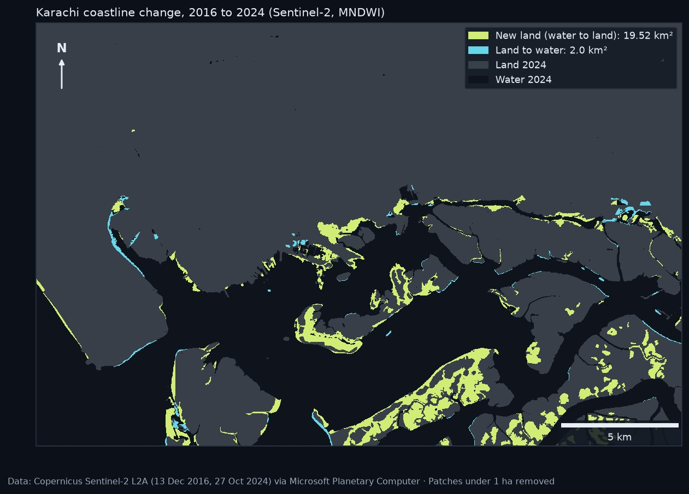
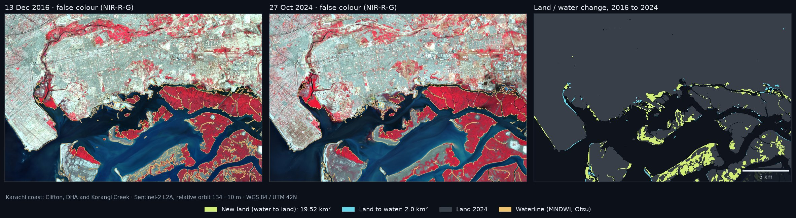
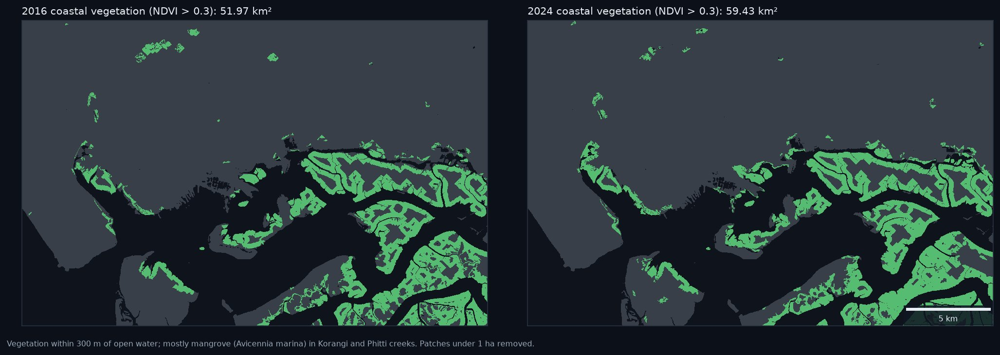
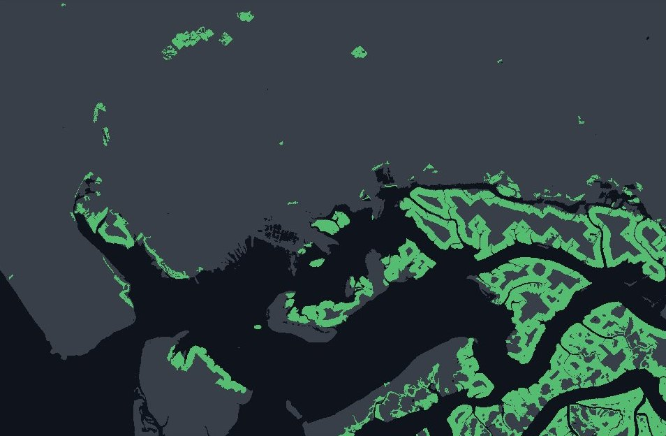
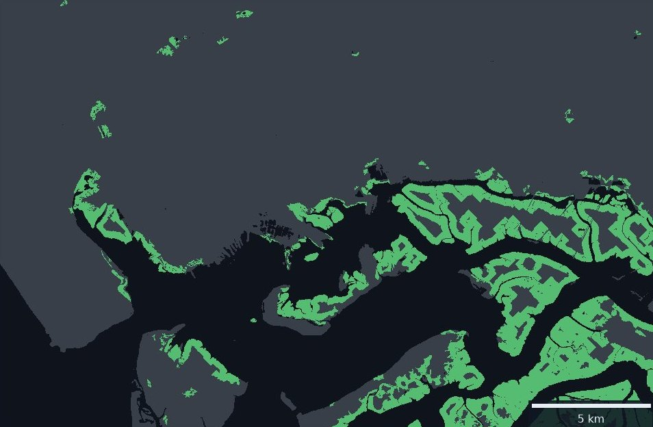

CASE STUDY · COASTAL REMOTE SENSING · CHANGE DETECTION
Karachi coast:
water, mud and mangroves.
How did the waterline and the mangrove canopy along Clifton, DHA and the Korangi and Phitti creeks change between 2016 and 2024? Two Sentinel-2 scenes from the same orbit, a water index with automatic thresholding, and a vegetation index restricted to the intertidal zone.

Question
Karachi's coast is a mix of reclaimed urban waterfront, port infrastructure and the mangrove creeks at the western edge of the Indus Delta. The aim was a repeatable method to (1) map where the land/water boundary moved and (2) measure the coastal mangrove canopy at two dates.
Data
Sentinel-2 L2A scenes of 13 December 2016 and 27 October 2024, both from relative orbit 134, tile 42RUN, under 0.05% cloud. Green, red, NIR and SWIR1 bands at 10 m over 497.7 km² (67.05–67.32°E, 24.72–24.88°N), from Microsoft Planetary Computer.
Method
1. Harmonise. The 2024 scene (processing baseline 05.11) carries a +1000 reflectance offset that the reprocessed 2016 scene (02.12) does not. Removing it first is essential: without the correction the 2024 image looks hazy and the water threshold shifts.
2. Water. MNDWI = (Green − SWIR1) / (Green + SWIR1), thresholded per scene with Otsu's method (0.148 in 2016, 0.125 in 2024), then cleaned with morphological opening and closing.
3. Change. Water→land and land→water pixels are compared, and patches smaller than 1 ha are removed.
4. Mangroves. NDVI > 0.3 within 300 m of open water, outside the water mask, at each date.

Results
- Water → land
- 19.5 km²
- Land → water
- 2.0 km²
- Mangrove 2016
- 52.0 km²
- Mangrove 2024
- 59.4 km²
About 19.5 km² changed from water to land, but most of it is on the creek islands and mudflats, not the urban waterfront. That pattern points mainly to differences in tide level and mudflat exposure between the two dates rather than permanent reclamation, so it should not be read as land gain without tide data. The coastal vegetation result is more robust: canopy within 300 m of the creeks grew from 52.0 to 59.4 km² (+14%), with 11.5 km² of new canopy and 4.0 km² lost. That is consistent with mangrove recovery and planting in the Korangi–Phitti creek system.



20162024Drag to compare coastal vegetation canopy in 2016 (51.97 km²) and 2024 (59.43 km²).
Limitations and next steps
Two single dates cannot separate tides from real shoreline movement. A tide-aware composite (many scenes binned by tide height) would fix this. The NDVI threshold also includes some non-mangrove vegetation near the shore. Next steps: tide-normalised waterlines and a mangrove classifier validated against field or high-resolution data.